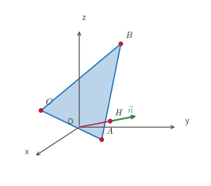
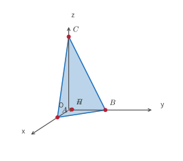
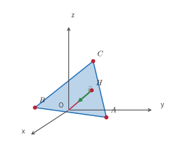

別冊練習問題 9 の解答 3点を通る平面と原点からの距離
(1) 3点 \(A(1,\ 1,\ 0),\ B(0,\ 1,\ 2),\ C(2,\ 0,\ 1)\) を通る平面の方程式と、原点からこの平面までの距離を求めよ。
法線ベクトル
\[\overrightarrow{AB}=\begin{pmatrix}-1\\0\\2\end{pmatrix},\quad \overrightarrow{AC}=\begin{pmatrix}1\\-1\\1\end{pmatrix}\]\[\overrightarrow{AB}\times\overrightarrow{AC}=\left(0\cdot1-2\cdot(-1),\ 2\cdot1-(-1)\cdot1,\ (-1)\cdot(-1)-0\cdot1\right)=\begin{pmatrix}2\\3\\1\end{pmatrix}\]\[\vec n=\begin{pmatrix}2\\3\\1\end{pmatrix}\]
平面の方程式
\(\vec n=(a,b,c)\) のとき平面は \(ax+by+cz=d\)。点 \(A(1,\ 1,\ 0)\) を通るので \(d\) を決める。
\[d=2\cdot1+3\cdot1+1\cdot0=5\]\[2 x + 3 y + z=5\]原点との距離
\(\dfrac{|a x_0+b y_0+c z_0-d|}{\sqrt{a^2+b^2+c^2}}\) に \((x_0,y_0,z_0)=(0,0,0)\) を代入する。
\[\dfrac{|2\cdot0+3\cdot0+1\cdot0-5|}{\sqrt{2^2+3^2+1^2}}=\dfrac{5}{\sqrt{14}}=\dfrac{5 \sqrt{14}}{14}\]図：原点 \(O\) から平面に下ろした垂線の足 \(H\) までの長さが距離。

【答案】
\[2 x + 3 y + z=5,\ \ \text{距離 }\dfrac{5 \sqrt{14}}{14}\]答
(2) 3点 \(A(2,\ 0,\ 0),\ B(0,\ 3,\ 0),\ C(0,\ 0,\ 6)\) を通る平面の方程式と、原点からこの平面までの距離を求めよ。
法線ベクトル
\[\overrightarrow{AB}=\begin{pmatrix}-2\\3\\0\end{pmatrix},\quad \overrightarrow{AC}=\begin{pmatrix}-2\\0\\6\end{pmatrix}\]\[\overrightarrow{AB}\times\overrightarrow{AC}=\left(3\cdot6-0\cdot0,\ 0\cdot(-2)-(-2)\cdot6,\ (-2)\cdot0-3\cdot(-2)\right)=\begin{pmatrix}18\\12\\6\end{pmatrix}\]
各成分を \(6\) でわって、向きが同じ短いベクトルにする。
\[\vec n=\begin{pmatrix}3\\2\\1\end{pmatrix}\]平面の方程式
\(\vec n=(a,b,c)\) のとき平面は \(ax+by+cz=d\)。点 \(A(2,\ 0,\ 0)\) を通るので \(d\) を決める。
\[d=3\cdot2+2\cdot0+1\cdot0=6\]\[3 x + 2 y + z=6\]原点との距離
\(\dfrac{|a x_0+b y_0+c z_0-d|}{\sqrt{a^2+b^2+c^2}}\) に \((x_0,y_0,z_0)=(0,0,0)\) を代入する。
\[\dfrac{|3\cdot0+2\cdot0+1\cdot0-6|}{\sqrt{3^2+2^2+1^2}}=\dfrac{6}{\sqrt{14}}=\dfrac{3 \sqrt{14}}{7}\]図：原点 \(O\) から平面に下ろした垂線の足 \(H\) までの長さが距離。

【答案】
\[3 x + 2 y + z=6,\ \ \text{距離 }\dfrac{3 \sqrt{14}}{7}\]答
(3) 3点 \(A(1,\ 2,\ 0),\ B(3,\ 0,\ 1),\ C(0,\ 1,\ 2)\) を通る平面の方程式と、原点からこの平面までの距離を求めよ。
法線ベクトル
\[\overrightarrow{AB}=\begin{pmatrix}2\\-2\\1\end{pmatrix},\quad \overrightarrow{AC}=\begin{pmatrix}-1\\-1\\2\end{pmatrix}\]\[\overrightarrow{AB}\times\overrightarrow{AC}=\left((-2)\cdot2-1\cdot(-1),\ 1\cdot(-1)-2\cdot2,\ 2\cdot(-1)-(-2)\cdot(-1)\right)=\begin{pmatrix}-3\\-5\\-4\end{pmatrix}\]\[\vec n=\begin{pmatrix}-3\\-5\\-4\end{pmatrix}\]
平面の方程式
\(\vec n=(a,b,c)\) のとき平面は \(ax+by+cz=d\)。点 \(A(1,\ 2,\ 0)\) を通るので \(d\) を決める。
\[d=(-3)\cdot1+(-5)\cdot2+(-4)\cdot0=-13\]\[- 3 x - 5 y - 4 z=-13\]原点との距離
\(\dfrac{|a x_0+b y_0+c z_0-d|}{\sqrt{a^2+b^2+c^2}}\) に \((x_0,y_0,z_0)=(0,0,0)\) を代入する。
\[\dfrac{|(-3)\cdot0+(-5)\cdot0+(-4)\cdot0-(-13)|}{\sqrt{(-3)^2+(-5)^2+(-4)^2}}=\dfrac{13}{\sqrt{50}}=\dfrac{13 \sqrt{2}}{10}\]図：原点 \(O\) から平面に下ろした垂線の足 \(H\) までの長さが距離。

【答案】
\[- 3 x - 5 y - 4 z=-13,\ \ \text{距離 }\dfrac{13 \sqrt{2}}{10}\]答